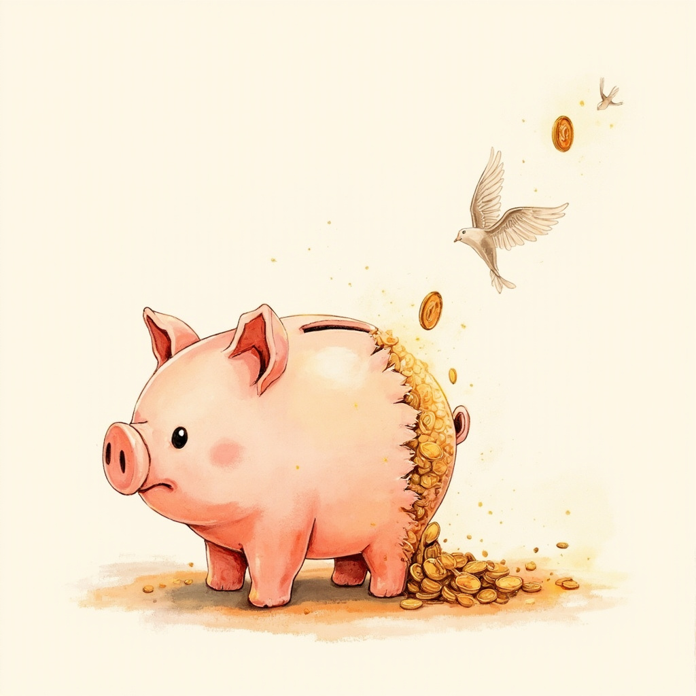
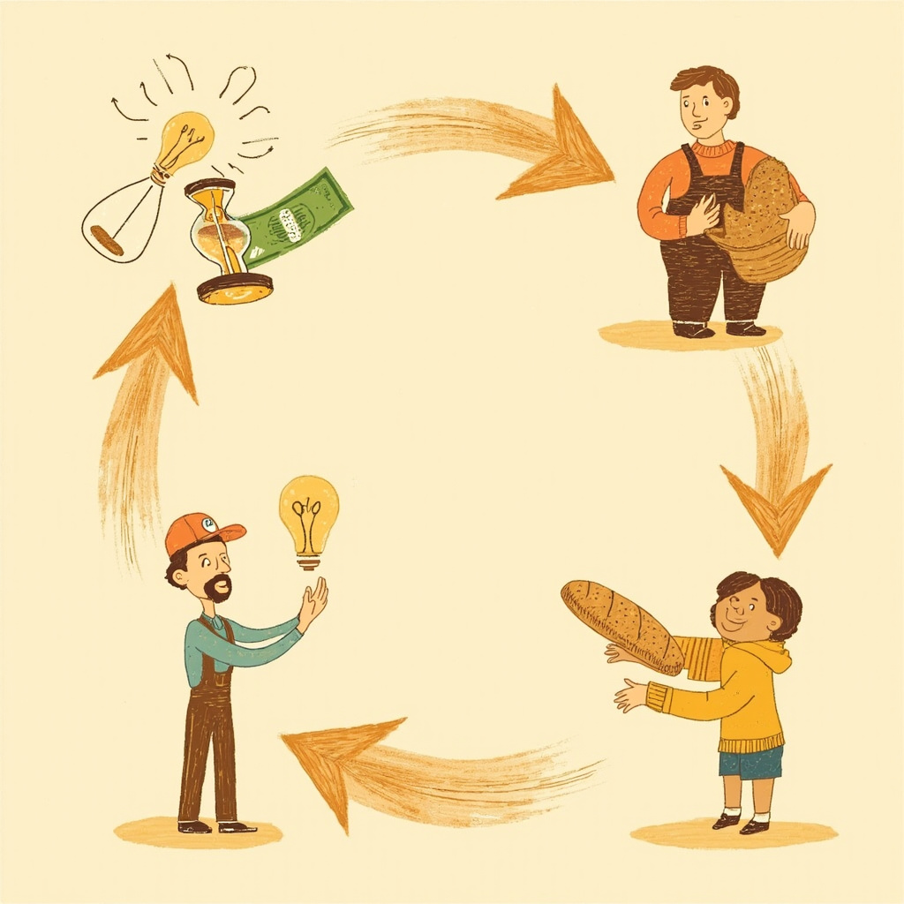
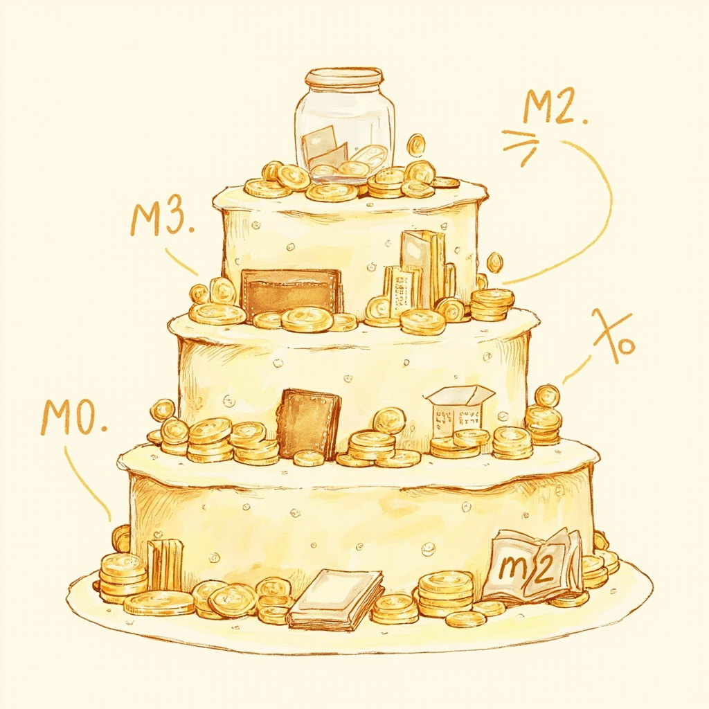
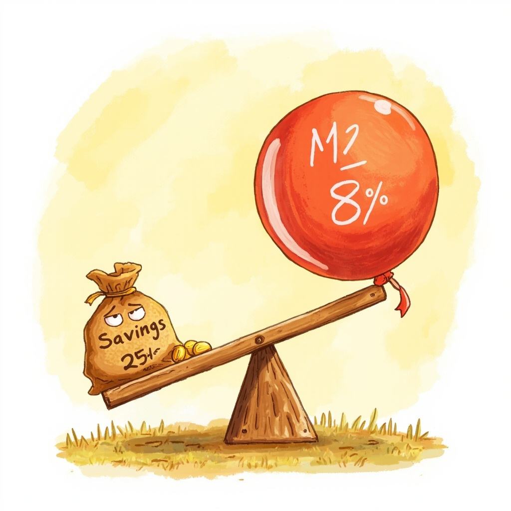

你有没有过这种瞬间：定期存款到期，利息到账，你心里一喜——不错，躺着也赚钱。然后你去超市，发现去年 3 块 5 的大白菜今年卖 4 块 2。你愣了一下，默默把白菜放回去了。你赚的那点利息，可能连白菜涨价的速度都跑不过。这就是金融第一课要聊的：你以为在存钱，其实购买力正在悄悄蒸发。

先搞懂一件事：钱到底是什么？
你可能会说：钱就是钱啊。但真相可能让你意外——钱不等于财富，它只是一张「搬运工」。
你花一个月时间、用十年的编程经验给公司写代码，月底卡里多了两万块。这两万块本身不是财富——你的时间和技能才是。钱只是帮你把「你的劳动」换成「别人的劳动」：两万块 = 一个月房租 + 三十顿饭 + 一件羽绒服。本质上你拿代码换了大米、换了暖气、换了温暖。
如果明天所有人都不要人民币了，你卡里的数字就是一堆废数。钱的价值，建立在所有人的共识之上。

你的钱在缩水，谁干的？
有一个你从没见过的人，每天都在动你的钱包——它叫 M2。别被名字吓到，拆开来看很简单：
- M0：你钱包里能摸到的纸币硬币。刚从 ATM 取的那 500 块就是。
- M1：M0 + 企业的活期存款。全社会「随时能花」的钱。
- M2：M1 + 定期存款 + 理财 + 公积金。整个社会的「钱的总池子」。
注意：房子和股票不是 M2，它们是资产，不是钱。
关键数字：M2 这个池子近几年每年膨胀 7%～9%。池子里的水每年多一截，你手里的水没变——那每一滴都在被稀释。这就是通胀的本质。

算一笔让你清醒的账
中国 M2 余额：292 万亿（2023）→ 313 万亿（2024）→ 340 万亿（2025）→ 353 万亿（2026.5）。三年多，多了 61 万亿。
现在假设你有 100 万，存 3 年定期，年利率 2.5%：
- 三年后账面上：107.5 万
- M2 年均增速：8%
- 购买力折算：≈ 92 万
你赚了银行 7.5 万利息，通胀从你口袋里拿走了约 13 万。一进一出，实际亏了 5 万多。
这不是数学游戏，这是复利在反方向对你的收割——而且悄无声息。

记住这一句就够了
钱是工具，不是目的。M2 增速就是你保卫财富的真正对手。
光靠存钱，就像骑自行车追高铁——你越努力蹬，差距越大。但别焦虑，这只是一个开始。接下来的课程，我们去认识基金、债券、指数——不是为了投机赌博，是为了让你的钱起码跑赢印钞机。
你不理财，财不理你。这句话的真相是：你不理通胀，通胀就来理你。